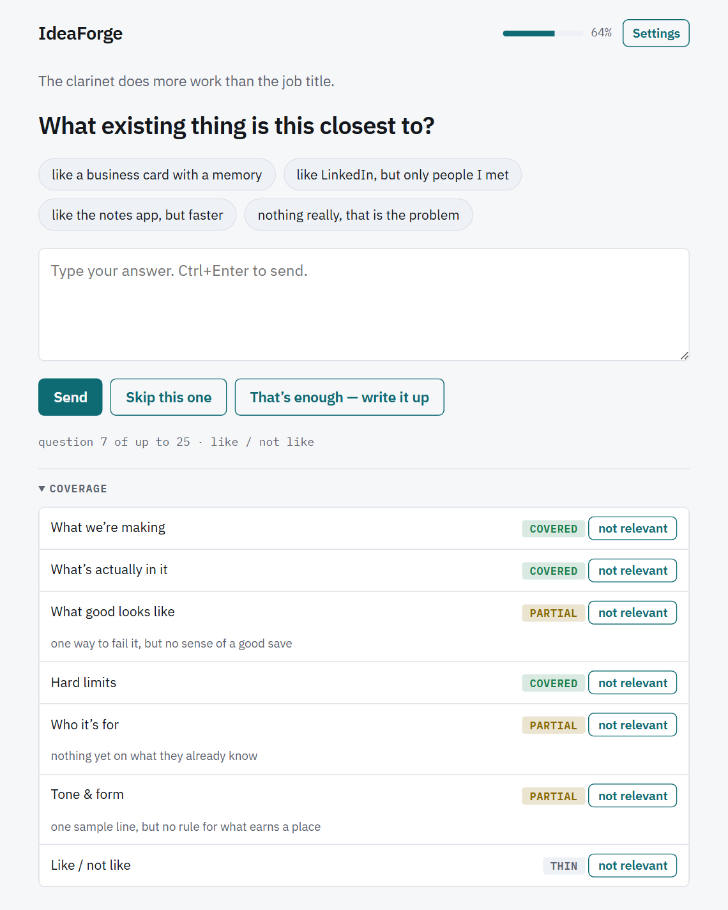
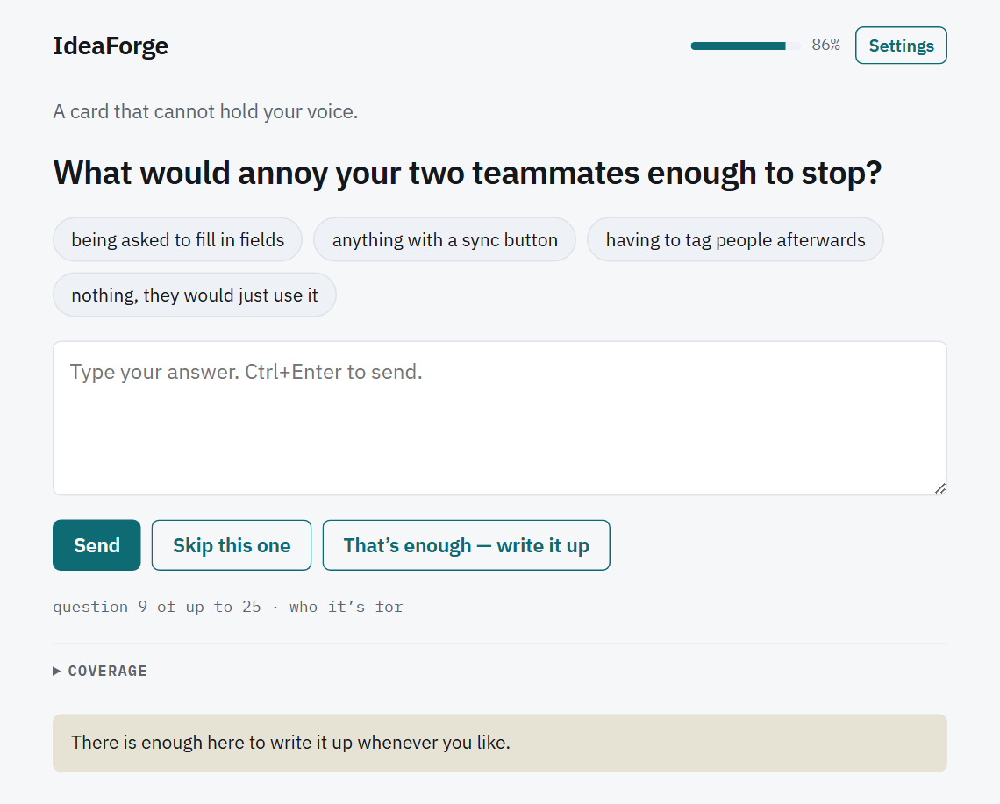
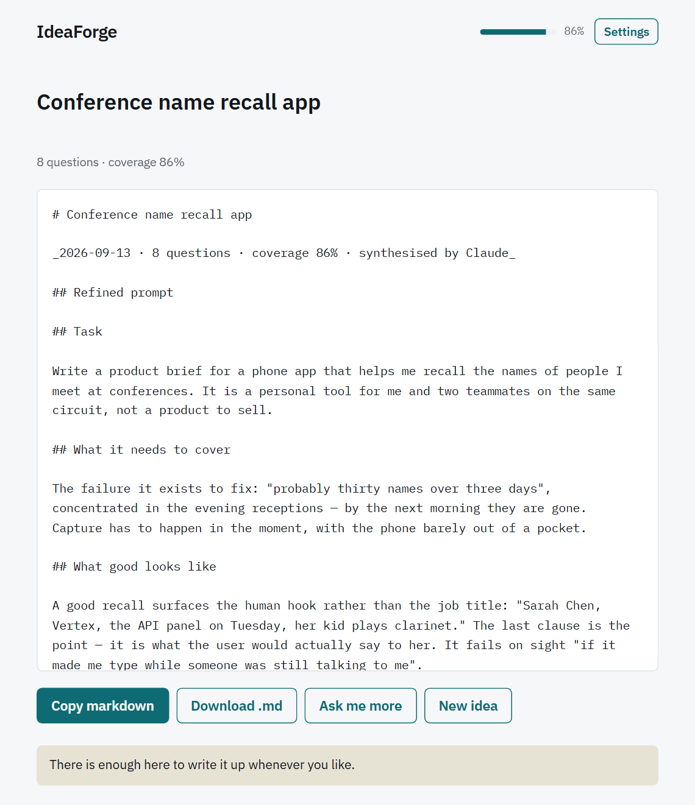

The interview engine
Coverage means there is enough evidence to write.
IdeaForge does not ask a fixed questionnaire or stop after an arbitrary number of turns. It tracks seven writing dimensions, asks for missing specifics, and only counts progress that survives a conservative coverage ratchet.

What happens in one turn
- The engine selects the least-covered important dimension and restricts the model to a suitable questioning move, such as asking for a concrete instance, a hard boundary, a trade-off, or a failure case.
- The provider writes one short question using the facts and vocabulary already in the conversation. IdeaForge rejects or retries malformed, repeated, or compound questions before showing one.
- You answer in text or by voice, select and edit a suggestion chip, or skip the question. The app saves the settled turn on this device.
- The provider may claim new facts and coverage from the answer. IdeaForge validates those claims, applies its ratchet, then selects the next gap.
Questions are intentionally specific: an instance, a preference under pressure, a boundary, or an example of right and wrong. The interviewer is instructed not to praise, advise, summarise your answer back to you, or ask several questions at once.
Your own wording matters
A suggestion chip is only a draft shape. If you submit it unchanged, its source is recorded as a chip and the related dimension is capped at partial. Editing the text makes it your answer again. Dictated answers are recorded as voice, and the interviewer is told to read them for intent rather than treating ordinary transcription noise as a new gap.
The seven coverage dimensions
| Dimension | What covered means in practice | Export section |
|---|---|---|
| What we’re making | The output type, rough shape or length, and what happens when it is done. | Task |
| What’s actually in it | The names, numbers, mechanics, steps, and awkward cases only you know. | What it needs to cover |
| What good looks like | How you will judge the result quickly, plus a concrete failure that rejects it. | What good looks like |
| Hard limits | Non-negotiable format, length, platform, deadline, budget, and banned moves. | Constraints |
| Who it’s for | The real reader or user, what they know, what they will do, and what annoys them. | Context |
| Tone & form | The register and structure, ideally demonstrated by a sample line or clear contrast. | Voice and form |
| Like / not like | A concrete reference point and the place where the resemblance must stop. | Reference points |
How levels and percentages work
| Level | Meaning | What usually helps next |
|---|---|---|
| Thin | The section could not be written without inventing material. | A concrete example, number, name, format, boundary, or decision. |
| Partial | The section could be written, but it would still sound generic or under-specified. | The detail that distinguishes your answer from many similar ideas. |
| Covered | Your own specifics are sufficient for a stranger to make the same choices you would. | No more questions unless later answers expose a new gap. |
| Waived | You selected not relevant, so the area leaves the interview. | Nothing; it no longer counts in the coverage percentage. |
The ratchet prevents optimistic scoring
- Coverage never silently falls.
- A dimension can rise by only one level in a turn.
- No more than two dimensions can rise from one answer.
- A claim of covered is reduced to partial unless it includes a short verbatim quote from one of your answers.
- A skipped, evasive, unknown, or unedited model-supplied answer cannot create unsupported coverage.
The percentage gives thin no credit, partial half credit, and covered full credit across the dimensions still being probed. Marking something not relevant removes it from both later questions and the denominator.
Skip a question or remove a dimension?
| Action | Use it when | Effect |
|---|---|---|
| Skip this one | This particular question is awkward, premature, or not worth answering. | The turn is recorded as skipped; the dimension remains available for a different question. |
| not relevant | The entire coverage dimension does not belong in this idea. | The dimension is waived, stops being asked about, and appears as deliberately left out in the export. |
When the interview offers to wrap up
The write-up button becomes available after four questions, so you can stop early by choice. Separately, the engine watches for conditions that mean continuing is unlikely to help.
| Trigger | What happens |
|---|---|
| Coverage readiness | Every remaining dimension is at least partial, and five are covered (or every remaining dimension when fewer than five are still in scope). The app says there is enough and leaves the decision to you. |
| No useful gain | Two consecutive scored turns add no coverage after the ratchet, so the app suggests stopping. |
| Soft ceiling | At 18 questions, the app recommends wrapping rather than letting the interview sprawl. |
| Hard ceiling | At 25 questions, no further question is asked and the app writes up the session. |
| Question bank exhausted | A fully degraded interview stops when no unused built-in question remains. |

The readiness advisory is shown once. If you keep going, IdeaForge does not repeat
it after every answer. In hands-free mode, the app asks whether to write it up and
only wraps on a clear yes; keep going
continues the interview.
What the write-up contains
Wrapping makes one final provider call. The synthesiser is instructed to use your vocabulary and specifics, omit sections with no real material, and put unresolved decisions into open questions instead of guessing.
- A short title, unless you have already renamed the idea yourself.
- A refined second-person prompt organised by the covered dimensions.
- Any assumptions the synthesiser had to make.
- Open questions, including deliberately waived areas.
- A coverage table with the remaining gap for each dimension.
- The full transcript, with skips and dictated answers marked.

Ask me more reopens the same session and marks the existing synthesis as stale. If you export before wrapping again, the Markdown warns that the refined prompt predates the newest answers.
When the provider cannot answer
A model failure does not dead-end the interview. IdeaForge chooses an unused question from its built-in bank of 21 questions and keeps the session moving.
from the built-in checklist, the live error explains that the connection was lost, and the final Markdown records how many questions were not grounded by the model in the preceding answers.
- A failed provider call degrades that turn only. A later successful call can return to model-written questions.
- If a saved interview is resumed without a usable provider, it can continue from the question bank.
- In a fully checklist-only run, the coverage percentage may remain flat because coverage scoring is also model-supplied and cannot be applied without a provider.
- Checklist turns do not create a false no-gain streak; a network problem is not treated as evidence that the idea is exhausted.
If the final synthesis fails
The done screen still renders exportable Markdown. The refined prompt is marked Not generated, while the document retains its metadata, Open questions section, coverage table, and full transcript. Share, copy, and download remain available. Fix the provider and choose Ask me more if you want to continue before trying another wrap-up.
If the tab closes during a request
IdeaForge records a pending turn or synthesis before starting the provider call. On resume it clears already-completed bookkeeping without duplicating a question, or safely reissues the deterministic request when the work did not finish.